何恺明首个语言模型：105M参数，不走GPT自回归老路
量子位·2026年05月13日 08:56
顶级CV大佬也来卷LLM了吗？
何恺明，也下场做语言模型了。
只不过，这次他带队做的不是大家熟悉的、像ChatGPT背后那套“预测下一个词元”（next token prediction）的自回归范式。
而是另一条过去几年在图像领域大火、如今正被越来越多人搬进文本生成的新路线：扩散语言模型（Diffusion Language Model，DLM）。
在最新的论文中，何恺明团队放出全新连续扩散语言模型：ELF：Embedded Language Flows。
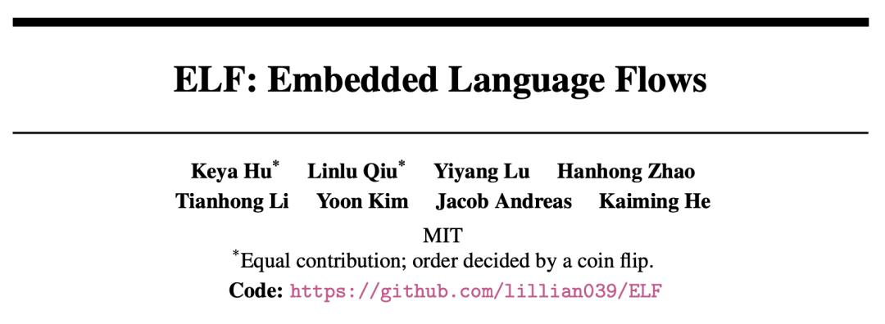
与不少还停留在token层面做扩散的语言模型不同，ELF把整个生成过程都留在了连续的embedding空间里，直到最后一步，才重新离散化，将表示变回token。
靠着这套设计，ELF只用了105M参数、45B训练token、32步采样，就正面跑赢了一批主流扩散语言模型。
最直观的一项指标是它在OpenWebText上，把生成困惑度（Generative Perplexity）直接压到了24。
这里简单科普一下生成困惑度，它本质上是让一个强大的语言模型，给生成结果“检查作业”，看看这些文本到底像不像真实人类写出来的语料——
值越低，说明生成质量越高、模型出来的东西也就越没AI味儿，越自然。
在和主流扩散语言模型的对比中，ELF在训练token少近10倍、采样步数更少的情况下，反而拿到了更低的生成困惑度。
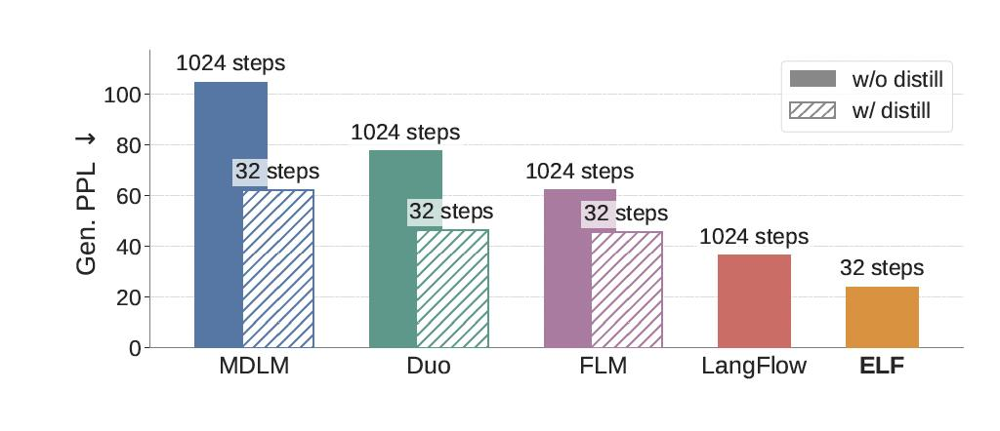
可以说，在过去很长一段时间里，扩散语言模型的进展，几乎都发生在离散DLM（Discrete DLM）这一侧。
而ELF第一次证明了一件事：连续的方法，不但能跑，而且效果不错。
ELF到底做了什么
要理解ELF，先得理解扩散语言模型现在到底在做什么。
扩散语言模型，主要有两种技术路线。一是以MDLM、Duo为代表的离散派，直接在token空间做扩散，每一步处理的是离散随机变量。
二是包括Diffusion-LM、CDCD、DiffuSeq在内的连续派，把token映成连续embedding，在连续空间里去噪。
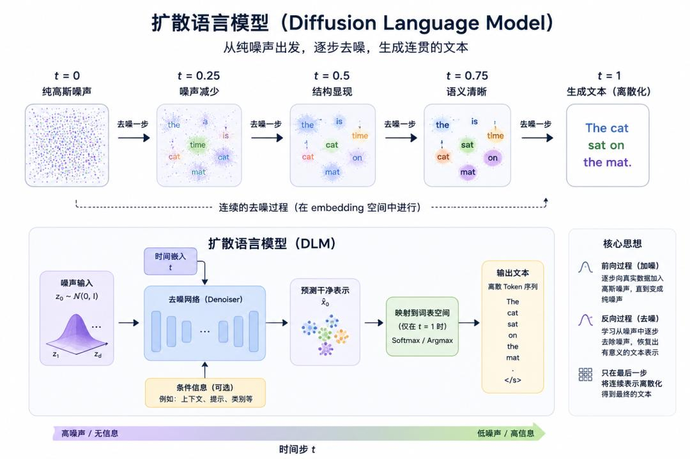
此前的研究中，像MDLM、LLaDA、Dream 7B这些离散路线占据了上风。原因是很简单，因为语言本身就是离散的。
对于这一看似常识的理解，恺明团队给出的判断恰恰相反——
问题可能不是“语言必须离散”，问题可能是：前人根本没有让连续路线，连续到底。
Diffusion-LM这一类的方法虽然在embedding空间去噪，但每一步都要算一次token-level的交叉熵，把连续轨迹一路绑在词表上。
后来的LD4LG、Cosmos走latent diffusion路线，去噪过程是连续了，但要单独训一个decoder把latent解回token，相当于多一个模块。
基于此，ELF把所有denoising，全留在continuous embedding space；直到最后一步 t=1，才重新投回token。
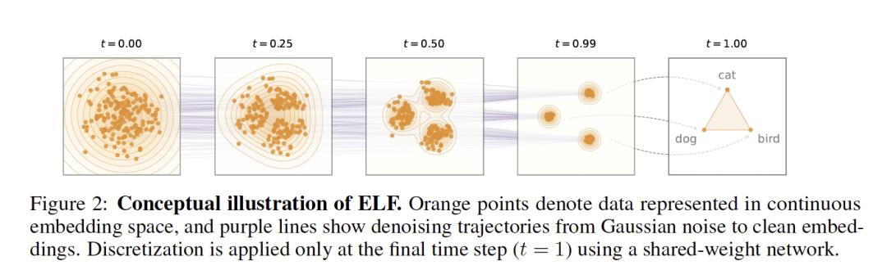
具体来说，ELF在训练时，离散token先被编码成连续embedding，再加噪成 z_t，模型要么负责把它还原成干净embedding（MSE），要么直接预测token（CE）。
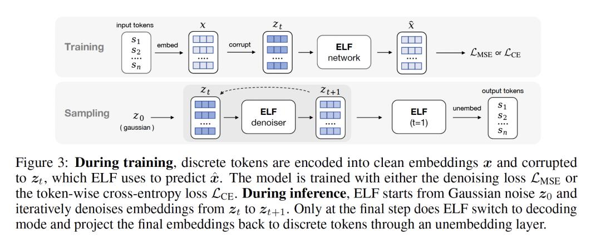
推理时，模型从高斯噪声 z_0 出发，一路在连续空间里去噪，直到最后一步，才切到decode模式，把embedding重新投回token。
ELF第一次把“连续表示”和“离散输出”这两个过去总被认为必须反复对齐的问题，彻底拆开了：
中间的去噪，完全交给连续空间；最终的语言生成，只留到最后一步离散化。
没有每一步都往词表上硬对齐，也不需要额外训练一个decoder，整个生成流程第一次真正做到了：
连续就是连续，离散就是离散。
而这，恰恰也是ELF后面能用更少采样步数、更少训练token，却跑赢一众扩散语言模型的关键。
ELF不是“先扩散，再解码”。
在具体的实现上，ELF还解决了三个问题：
token怎么变连续？连续里怎么去噪？最后又怎么变回token？
把token变成连续embedding
要把连续扩散用在语言上，第一步，得先把离散的token变成连续表示。
论文中，ELF先把它切成token序列，再映射到连续embedding空间。这里具体怎么映射，其实有多种选择。
默认情况下，ELF用的是T5预训练encoder，生成双向的contextual embedding。论文后面也测试了jointly trained embedding和随机embedding等不同方案。
值得注意的是，这个encoder只在训练阶段使用，推理时并不会额外增加模块。
在连续embedding空间里做Flow Matching
拿到连续表示之后，ELF就在embedding空间里做Flow Matching。
简单说，Flow Matching定义了一条从噪声到真实数据的连续流动轨迹：
t=0时，是高斯噪声；
t=1时，是干净的embedding；
中间所有状态，都是两者的线性插值，也就是论文里的rectified flow。
在传统Flow Matching，网络通常直接预测“速度场” v。
但ELF没有这么做，而是沿用了恺明团队半年前在《Back to Basics: Let Denoising Generative Models Denoise》里提出的思路——
直接预测干净embedding x，也就是x-prediction。
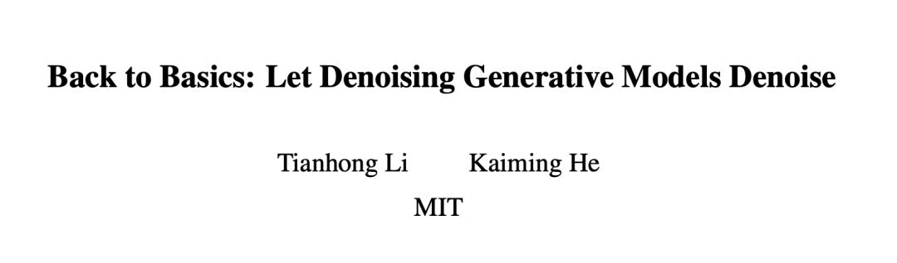
训练目标，就是最小化预测embedding和真实embedding之间的均方误差（MSE）。
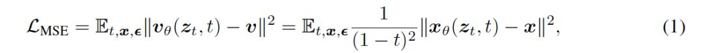
至于为什么采用x-prediction，论文给了两个原因：
第一，它在高维表示上更稳定——比如768维甚至更高的token embedding；第二，它天然和最后一步“预测干净token”的目标对齐。
论文还特别提到：虽然理论上也可以先预测速度v，再换算成x，但这样一来，后面denoising和decoding之间的权重共享就很难成立。
实验上，他们也发现：一旦共享权重，v-prediction效果明显变差。
从连续embedding，再回到离散token
生成语言，最终输出还是离散token。
所以ELF只在最后一个时间步（t = 1），还得把连续embedding重新投回token空间。
不过，这一步ELF没有像很多latent diffusion方法那样，额外训练一个decoder。相反，它把最后一步直接视作：一次continuous-to-discrete decoding。
换句话说：decoder和前面的denoiser，其实是同一个网络。
为了让最后一步训练不至于太简单（因为理论上t→1时，输入已经非常接近干净embedding），ELF在最后一步额外加入了一次token-level corruption，构造出一个带扰动的输入。
随后，同一个网络输出clean embedding，再通过一个可学习的unembedding矩阵 W，投影成token logits。
训练目标，则是标准的token-level cross-entropy loss。整个网络共享同一套参数，并额外接收一个二值的mode token：去噪模式/解码模式。
推理时，ELF从高斯噪声开始一路在连续空间里去噪，直到最后一步 t = 1，才切换到decode模式，再通过argmax输出最终token。
值得一提的是，在ELF中，图像生成里最常用的技术之一，CFG（classifier-free guidance）也被搬过来了
ELF用self-conditioning作为条件信号，套上training-time CFG（一次forward模拟两次推理，没有inference开销），把图像那边的方案直接搬了过来。
实验对比
实验部分，ELF基本回答了一个过去两年一直悬着的问题：
连续扩散语言模型，到底能不能打？答案是：不但能打，而且第一次在质量、速度、训练成本三个维度同时赢。
如开头所说，在OpenWebText生成任务中，在不做蒸馏的情况下，ELF只用32步采样，就把生成困惑度压到了24。
而此前主流的离散扩散模型，往往要跑到1024步，才能接近这个水平。
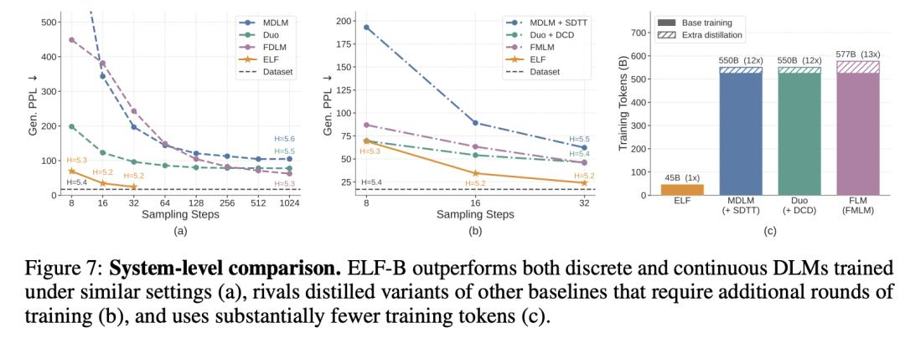
更夸张的是，ELF实现这一结果时，训练token只用了45B。
而同级别对手，普遍是500B+。换句话说：采样步数少了一个数量级，训练数据也少了一个数量级，效果反而更好。
而在很多扩散模型最容易掉队的条件生成任务上，ELF也没掉链子。
无论是WMT14机器翻译，还是XSum文本摘要，ELF都稳定超过现有扩散语言模型，甚至把不少自回归baseline也压了下去。
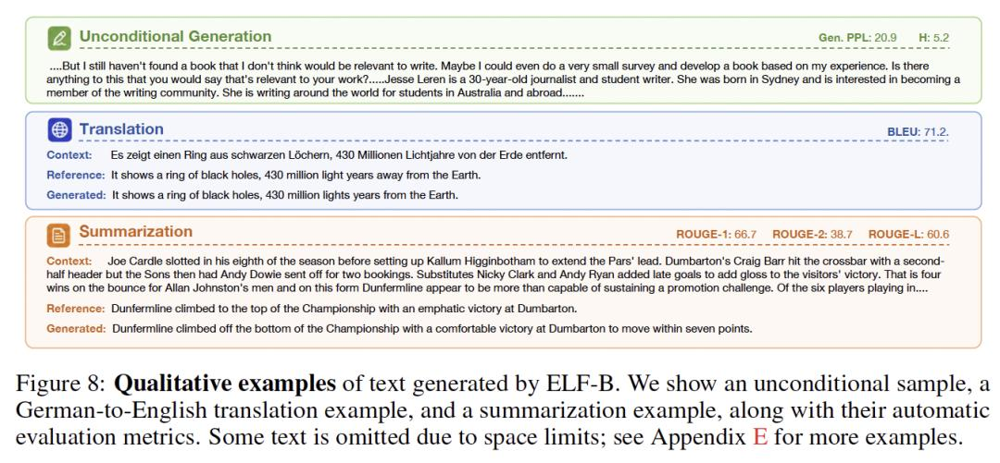
论文最后给出的总结其实很克制：ELF在生成质量、采样效率和训练成本之间，实现了很强的trade-off。
翻译成人话就是：连续派，不是不能打。只是以前没把连续这件事做到底。
作者介绍
最后，我们再来介绍一下这篇文章的作者。
这篇论文的两篇一作是共同贡献，排名先后顺序由硬币决定。
胡珂雅，她是这篇文章的两位第一作者之一，MIT EECS一年级博士生，也是恺明在MIT带的第一批博士生之一，目前由恺明和Jacob Andreas联合指导。
她本科毕业于上交的ACM班，目前的研究兴趣主要是语言和视觉的交叉领域，致力于构建数据效率更高、泛化能力更强的智能体。
值得一提的是，在恺明MIT的主页中，胡珂雅排在Grad students第一位，可以说是组内的大师姐了。
第二位第一作者Linlu Qiu，同样是MIT的博士生，师从Yoon Kim。
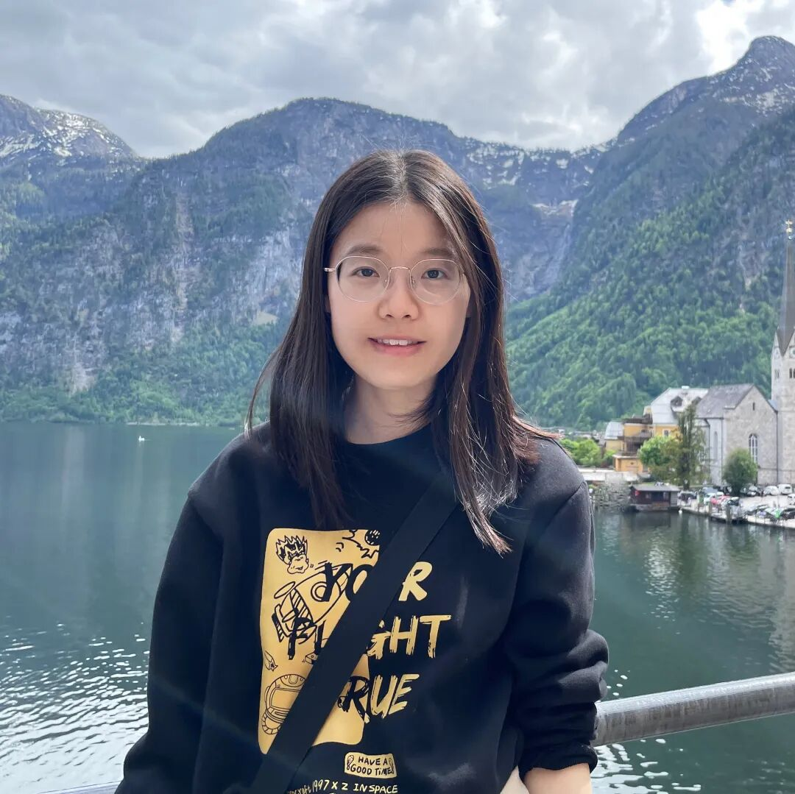
△
她本科毕业于香港大学，硕士毕业于Georgia Institute of Technology，此前还在Google做过AI Resident。
有意思的是，这并不是她第一次和恺明合作。就在不久前，她还和恺明团队一起拿下了CVPR 2026论文《ARC Is a Vision Problem!》，把ARC推理问题重新定义成了视觉问题。
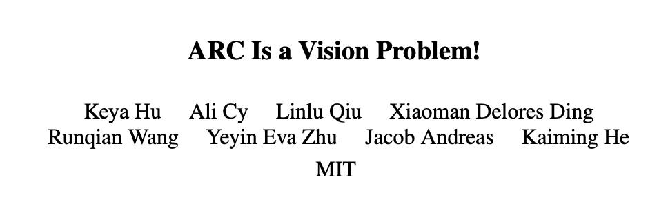
另一位作者Hanhong Zhao（赵瀚宏）为MIT本科生，他高中就读于人大附中，曾是国际物理奥林匹克竞赛IPhO金牌得主。
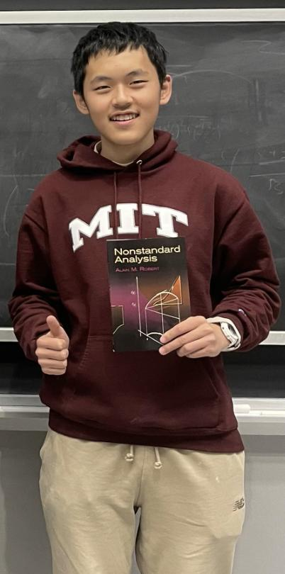
△
还有一位作者陆伊炀，背景有点“少年班味道”。
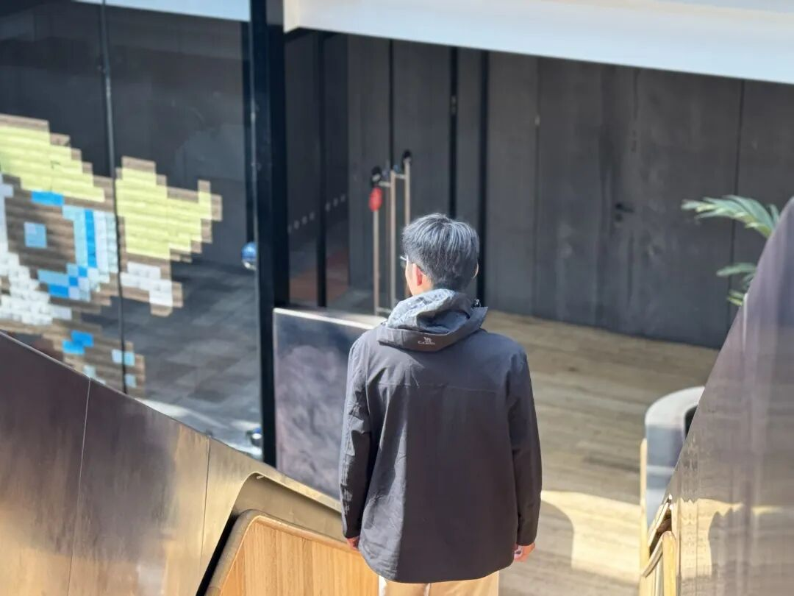
△
他是清华姚班大二本科生，目前在MIT计算机科学与人工智能实验室（CSAIL）实习，导师是何恺明，主要研究方向为计算机视觉和深度生成模型。
高中时期，他是物理竞赛生，曾以江苏选手中第一名、全国第九名的成绩，在2022年获得了第三十九届全国中学生物理竞赛（CPhO）金牌。
此前，他以一作身份与恺明合作过论文《Bidirectional Normalizing Flow: From Data to Noise and Back》。
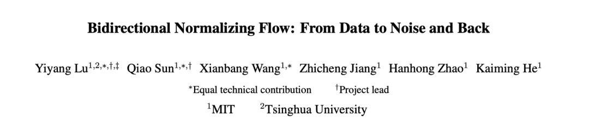
另一位核心作者黎天鸿，则是恺明组的博后。
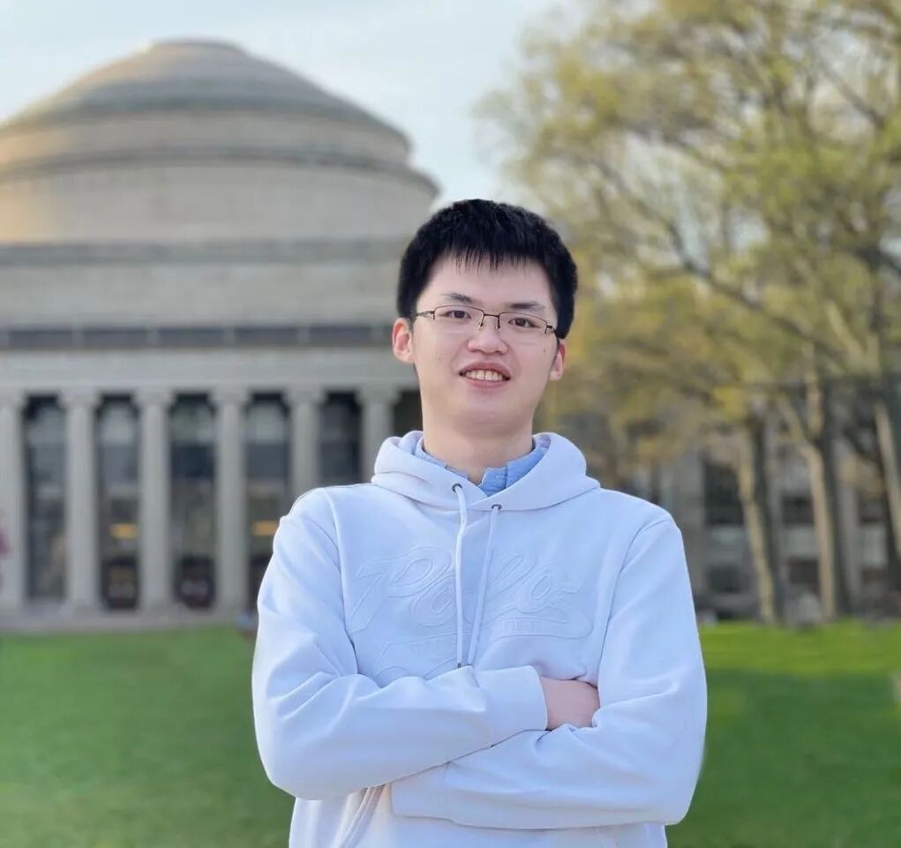
△
他本科就读于清华姚班，博士毕业于MIT，半年前那篇《Back to Basics: Let Denoising Generative Models Denoise》的一作，就是他。
此外，论文的其他作者Yoon Kim、Jacob Andreas，MIT EECS两位语言模型方向的教授，以及何恺明本人。
参考链接[1]https://arxiv.org/pdf/2605.10938
本文来自微信公众号“量子位”，作者：henry，36氪经授权发布。
该文观点仅代表作者本人，36氪平台仅提供信息存储空间服务。
\